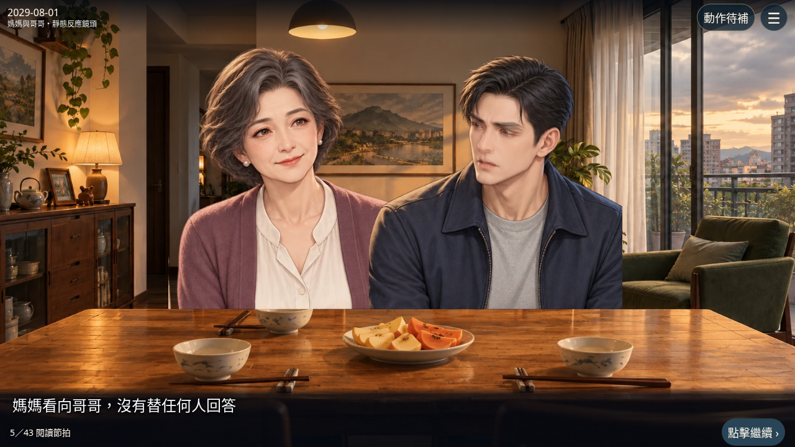
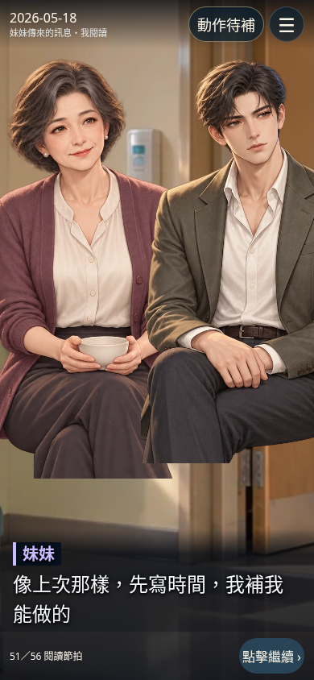
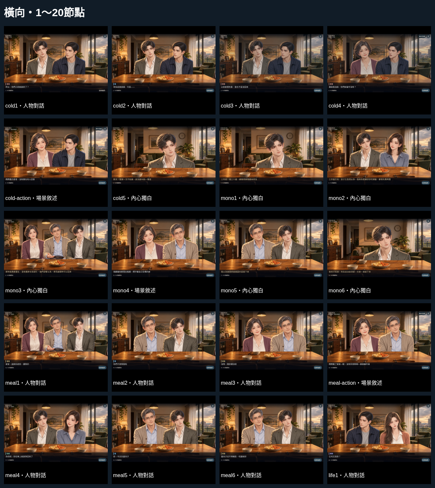
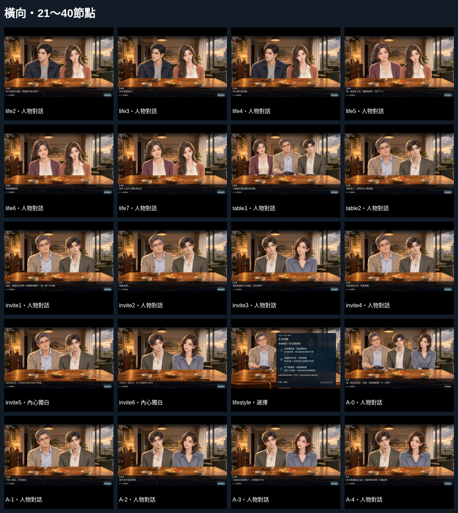
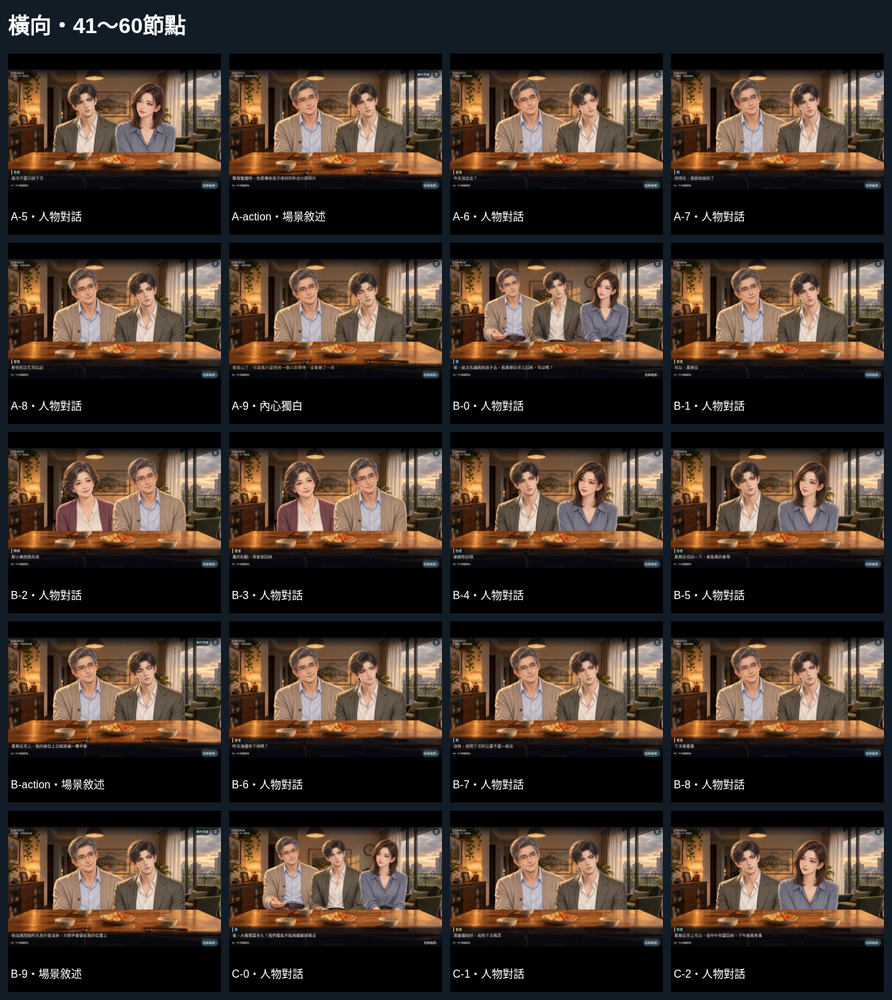
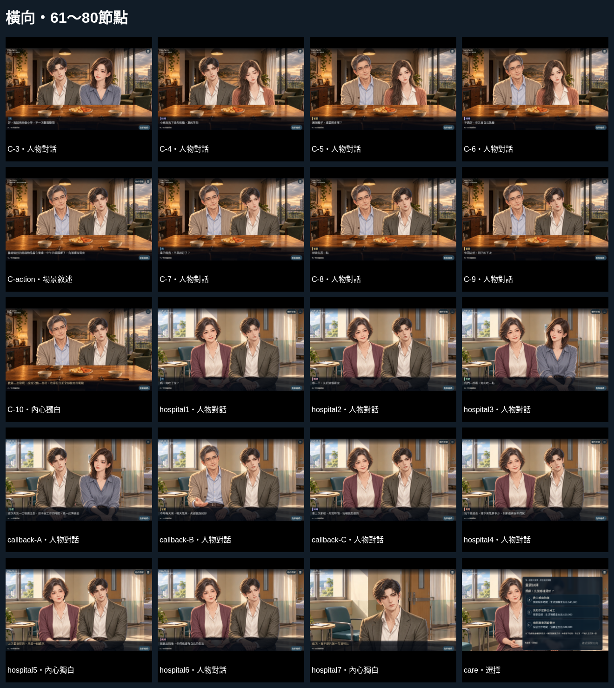
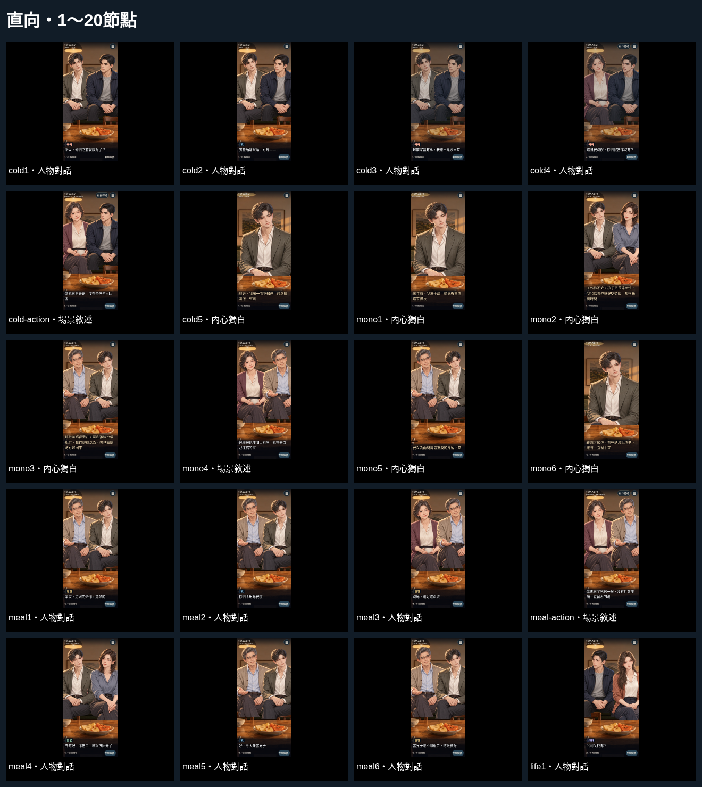
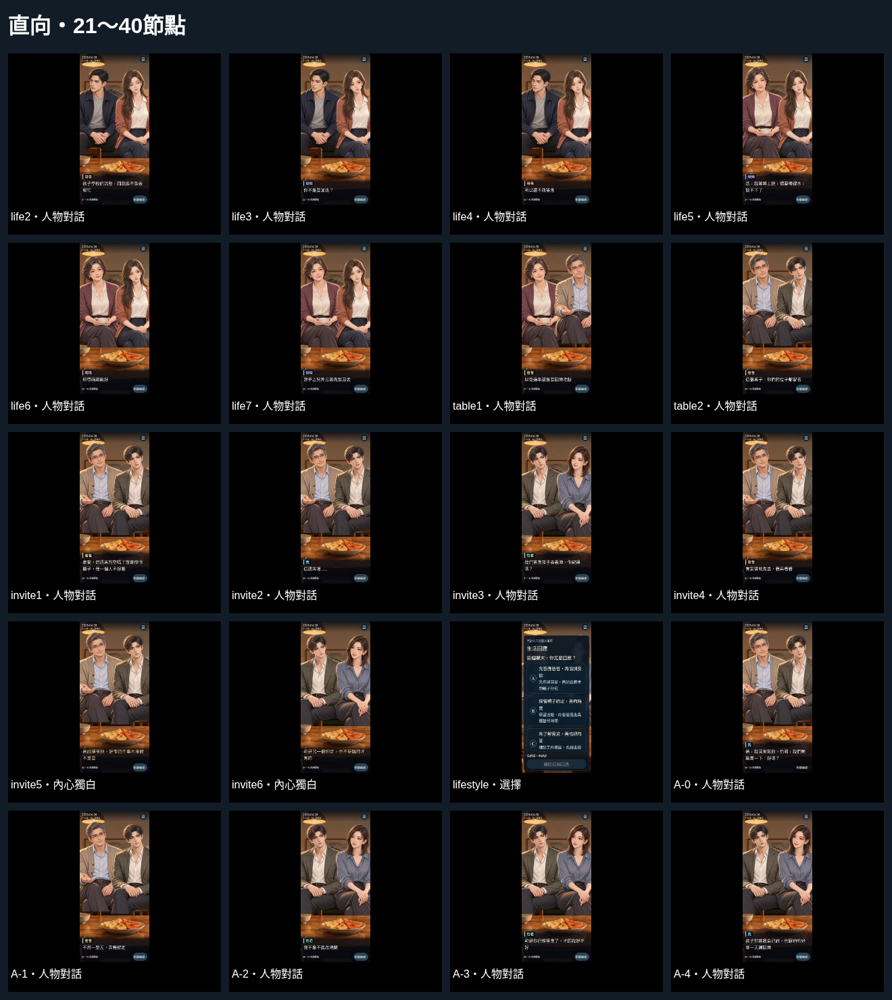
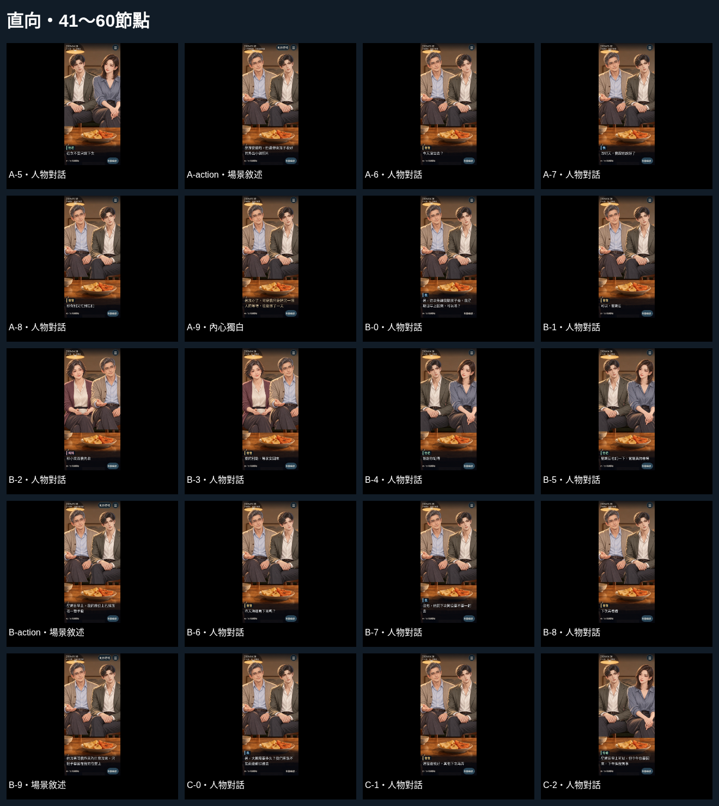
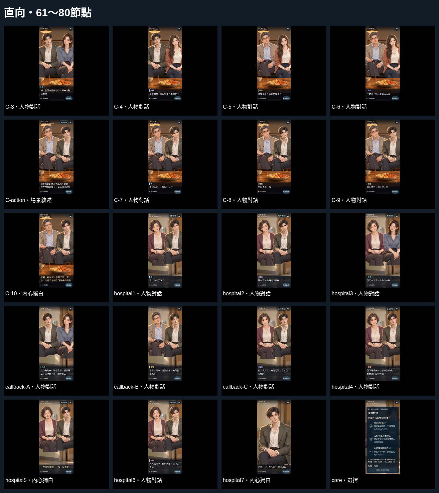

畫面原先的43是未選路的共通投影節拍數。實際選路後A/B各55、C為56；本次連同37個分支節點，共80個唯一節點全部檢查。資料與截圖來自修前67f06d0及本輪實際Chromium操作，不是實體iPhone截圖
修前有4個節點有明確的人物／鏡頭敘事矛盾；另8個原鏡頭仍看得到說話者，屬反應構圖改善，不冒稱都是劇情錯誤。本輪修正鏡頭與遠端訊息呈現。仍有14個節點存在動作或表情缺口，明確標為待補，不能以人物同框或測試通過冒充完整演出
修前是主角單人特寫；修後兩種方向均為媽媽與哥哥同框，鏡頭焦點獨立設定為媽媽。現有立繪可組成靜態相對構圖，但母親仍是固定微笑，轉頭、目光轉移及沉默擔憂表情尚未完成。畫面提供「動作待補」入口查看缺口

新增direction.mjs，逐節拍明訂橫／直向出場人物、焦點、必須可見的人物、傳達方式、人物動作及素材缺口。文字speaker僅負責對話身分，不再決定鏡頭人物；雙人鏡頭也固定左右位置，不因更換說話者而交換人物。哥哥的語音與妹妹的訊息改拍收訊者反應，並在畫面指出訊息來源，不假設兩人已抵達醫院
表格以預設名字「家安」示範台詞，遊戲仍使用該輪自訂名字。「實際鏡頭」來自修前／後瀏覽器視窗內的臉部資料，並列鏡頭類型；兩個決策節點只列底層構圖，不把被選項遮住的背景當作可見動作證據。人物與字幕合理銜接不等於動畫品質已完成；有缺口者一律保留待補狀態
| 閱讀節拍 | 台詞／敘述 | 應出現人物 | 實際鏡頭 | 是否一致 | 修正方式 |
|---|---|---|---|---|---|
共通1cold1A/B/C實際位置：1／1／1 | 所以，你們之前就談好了？ | 橫：我＋哥哥 直：我＋哥哥 | 修前 橫：我＋哥哥；直：我＋哥哥 修後 橫：我＋哥哥（雙人中景）；直：我＋哥哥（雙人中景）焦點：橫哥哥／直哥哥 | 人物與內容可合理銜接 ↓ 人物與內容可合理銜接 | 人物對話由說話者與在場對象同框承接人物動作設定哥哥：說話 → 我 |
共通2cold2A/B/C實際位置：2／2／2 | 有些話爸說過，可是—— | 橫：我＋哥哥 直：我＋哥哥 | 修前 橫：我＋哥哥；直：我＋哥哥 修後 橫：我＋哥哥（雙人中景）；直：我＋哥哥（雙人中景）焦點：橫我／直我 | 人物與內容可合理銜接 ↓ 人物與內容可合理銜接 | 人物對話由說話者與在場對象同框承接人物動作設定我：說話 → 哥哥 |
共通3cold3A/B/C實際位置：3／3／3 | 以前家裡有事，我也不是沒回來 | 橫：我＋哥哥 直：我＋哥哥 | 修前 橫：哥哥＋我；直：哥哥 修後 橫：我＋哥哥（雙人中景）；直：我＋哥哥（雙人中景）焦點：橫哥哥／直哥哥 | 說話者可見，但反應構圖需改善 ↓ 人物與內容可合理銜接 | 人物對話由說話者與在場對象同框承接人物動作設定哥哥：說話 → 我 |
共通4cold4A/B/C實際位置：4／4／4 | 還是我沒說，你們就當作沒有？ | 橫：媽媽＋哥哥 直：媽媽＋哥哥 | 修前 橫：哥哥＋媽媽；直：哥哥 修後 橫：媽媽＋哥哥（雙人中景）；直：媽媽＋哥哥（雙人中景）焦點：橫哥哥／直哥哥 | 說話者可見，但反應構圖需改善 ↓ 人物已對應；動作／表情待素材 | 人物對話由說話者與在場對象同框承接人物動作設定哥哥：說話 → 媽媽 媽媽：聆聽哥哥的質疑 → 哥哥 待補：媽媽沉默／擔憂的表情立繪，目前固定微笑不代表已完成情緒反應 |
共通5cold-actionA/B/C實際位置：5／5／5 | 媽媽看向哥哥，沒有替任何人回答 | 橫：媽媽＋哥哥 直：媽媽＋哥哥 | 修前 橫：我；直：我 修後 橫：媽媽＋哥哥（雙人中景）；直：媽媽＋哥哥（雙人中景）焦點：橫媽媽／直媽媽 | 人物／鏡頭不一致 ↓ 人物已對應；動作／表情待素材 | 敘述主體為媽媽、目標為哥哥，兩種方向皆須同框，不使用主角特寫代替人物動作設定媽媽：看向 → 哥哥 媽媽：保持沉默 待補：媽媽轉頭與目光轉移的分層素材、媽媽沉默／擔憂的表情立繪、哥哥接住母親視線的反應素材 |
共通6cold5A/B/C實際位置：6／6／6 | 那天，我第一次不知道，該怎麼叫他一聲哥 | 橫：我 直：我 | 修前 橫：我；直：我 修後 橫：我（人物特寫）；直：我（人物特寫）焦點：橫我／直我 | 人物與內容可合理銜接 ↓ 人物與內容可合理銜接 | 主角回想與主觀判斷，採主角或所回想家人的合理反應鏡頭 |
共通7mono1A/B/C實際位置：7／7／7 | 三年前，我三十歲，總覺得事情還來得及 | 橫：我 直：我 | 修前 橫：我；直：我 修後 橫：我（人物特寫）；直：我（人物特寫）焦點：橫我／直我 | 人物與內容可合理銜接 ↓ 人物與內容可合理銜接 | 主角回想與主觀判斷，採主角或所回想家人的合理反應鏡頭 |
共通8mono2A/B/C實際位置：8／8／8 | 工作做不完，孩子又長得太快，我和怡君連好好吃頓飯，都得先喬時間 | 橫：我＋怡君 直：我＋怡君 | 修前 橫：我＋怡君；直：我＋怡君 修後 橫：我＋怡君（雙人中景）；直：我＋怡君（雙人中景）焦點：橫我／直我 | 人物與內容可合理銜接 ↓ 人物與內容可合理銜接 | 主角回想與主觀判斷，採主角或所回想家人的合理反應鏡頭 |
共通9mono3A/B/C實際位置：9／9／9 | 那時爸媽都還在，哥和雅婷也常說忙，我們卻都以為，想見面隨時可以回來 | 橫：媽媽＋爸爸＋我 直：爸爸＋我 | 修前 橫：爸爸＋媽媽＋我；直：爸爸＋我 修後 橫：媽媽＋爸爸＋我（三人中景）；直：爸爸＋我（雙人中景）焦點：橫我／直我 | 人物與內容可合理銜接 ↓ 人物與內容可合理銜接 | 主角回想與主觀判斷，採主角或所回想家人的合理反應鏡頭 |
共通10mono4A/B/C實際位置：10／10／10 | 爸顧著他那間出租屋，媽守著自己住慣的家 | 橫：媽媽＋爸爸 直：媽媽＋爸爸 | 修前 橫：爸爸＋媽媽；直：爸爸＋媽媽 修後 橫：媽媽＋爸爸（雙人中景）；直：媽媽＋爸爸（雙人中景）焦點：橫爸爸／直爸爸 | 人物與內容可合理銜接 ↓ 人物與內容可合理銜接 | 父母雙人鏡頭承接房屋背景資訊，不假裝用畫面確認登記或法律權利人物動作設定爸爸：持有出租屋 媽媽：持有自住房 |
共通11mono5A/B/C實際位置：11／11／11 | 我以為兩間房最重要的是留下來 | 橫：爸爸＋我 直：爸爸＋我 | 修前 橫：我＋爸爸；直：我＋爸爸 修後 橫：爸爸＋我（雙人中景）；直：爸爸＋我（雙人中景）焦點：橫我／直我 | 人物與內容可合理銜接 ↓ 人物與內容可合理銜接 | 主角回想與主觀判斷，採主角或所回想家人的合理反應鏡頭 |
共通12mono6A/B/C實際位置：12／12／12 | 後來才知道，有些話沒說清楚，也會一直留下來 | 橫：我 直：我 | 修前 橫：我；直：我 修後 橫：我（人物特寫）；直：我（人物特寫）焦點：橫我／直我 | 人物與內容可合理銜接 ↓ 人物與內容可合理銜接 | 主角回想與主觀判斷，採主角或所回想家人的合理反應鏡頭 |
共通13meal1A/B/C實際位置：13／13／13 | 家安，這碗先給你，還熱的 | 橫：媽媽＋爸爸＋我 直：爸爸＋我 | 修前 橫：爸爸＋我＋媽媽；直：我＋爸爸 修後 橫：媽媽＋爸爸＋我（三人中景）；直：爸爸＋我（雙人中景）焦點：橫爸爸／直爸爸 | 人物與內容可合理銜接 ↓ 人物與內容可合理銜接 | 人物對話由說話者與在場對象同框承接人物動作設定爸爸：招呼主角吃留著的飯 → 我 |
共通14meal2A/B/C實際位置：14／14／14 | 你們不用等我啦 | 橫：爸爸＋我 直：爸爸＋我 | 修前 橫：我＋爸爸；直：我＋爸爸 修後 橫：爸爸＋我（雙人中景）；直：爸爸＋我（雙人中景）焦點：橫我／直我 | 人物與內容可合理銜接 ↓ 人物與內容可合理銜接 | 人物對話由說話者與在場對象同框承接人物動作設定我：說話 → 爸爸 |
共通15meal3A/B/C實際位置：15／15／15 | 沒等，剛好還沒收 | 橫：媽媽＋爸爸 直：媽媽＋爸爸 | 修前 橫：爸爸＋媽媽；直：爸爸＋媽媽 修後 橫：媽媽＋爸爸（雙人中景）；直：媽媽＋爸爸（雙人中景）焦點：橫爸爸／直爸爸 | 人物與內容可合理銜接 ↓ 人物與內容可合理銜接 | 人物對話由說話者與在場對象同框承接人物動作設定爸爸：說話 → 媽媽 |
共通16meal-actionA/B/C實際位置：16／16／16 | 媽媽看了爸爸一眼，沒有拆穿那碗一直留著的湯 | 橫：媽媽＋爸爸 直：媽媽＋爸爸 | 修前 橫：我；直：我 修後 橫：媽媽＋爸爸（雙人中景）；直：媽媽＋爸爸（雙人中景）焦點：橫媽媽／直媽媽 | 人物／鏡頭不一致 ↓ 人物已對應；動作／表情待素材 | 媽媽看爸爸的反應鏡頭；保留留湯的重要資訊，缺少眼神與道具動作時明示待補人物動作設定媽媽：看爸爸而不拆穿 → 爸爸 待補：媽媽看向爸爸的目光過渡、留湯與保溫餐具的連續道具演出 |
共通17meal4A/B/C實際位置：17／17／17 | 先吃吧，你在車上就說快回完了 | 橫：我＋怡君 直：我＋怡君 | 修前 橫：我＋怡君；直：我＋怡君 修後 橫：我＋怡君（雙人中景）；直：我＋怡君（雙人中景）焦點：橫怡君／直怡君 | 人物與內容可合理銜接 ↓ 人物與內容可合理銜接 | 人物對話由說話者與在場對象同框承接人物動作設定怡君：說話 → 我 |
共通18meal5A/B/C實際位置：18／18／18 | 好，今天先當兒子 | 橫：爸爸＋我 直：爸爸＋我 | 修前 橫：我＋爸爸；直：我＋爸爸 修後 橫：爸爸＋我（雙人中景）；直：爸爸＋我（雙人中景）焦點：橫我／直我 | 人物與內容可合理銜接 ↓ 人物與內容可合理銜接 | 人物對話由說話者與在場對象同框承接人物動作設定我：說話 → 爸爸 |
共通19meal6A/B/C實際位置：19／19／19 | 當兒子也不用報告，吃飯就好 | 橫：爸爸＋我 直：爸爸＋我 | 修前 橫：爸爸＋我；直：爸爸＋我 修後 橫：爸爸＋我（雙人中景）；直：爸爸＋我（雙人中景）焦點：橫爸爸／直爸爸 | 人物與內容可合理銜接 ↓ 人物與內容可合理銜接 | 人物對話由說話者與在場對象同框承接人物動作設定爸爸：說話 → 我 |
共通20life1A/B/C實際位置：20／20／20 | 公司又找你？ | 橫：哥哥＋妹妹 直：哥哥＋妹妹 | 修前 橫：哥哥＋妹妹；直：哥哥＋妹妹 修後 橫：哥哥＋妹妹（雙人中景）；直：哥哥＋妹妹（雙人中景）焦點：橫妹妹／直妹妹 | 人物與內容可合理銜接 ↓ 人物與內容可合理銜接 | 人物對話由說話者與在場對象同框承接人物動作設定妹妹：說話 → 哥哥 |
共通21life2A/B/C實際位置：21／21／21 | 孩子學校的活動，問我能不能去幫忙 | 橫：哥哥＋妹妹 直：哥哥＋妹妹 | 修前 橫：哥哥＋妹妹；直：哥哥＋妹妹 修後 橫：哥哥＋妹妹（雙人中景）；直：哥哥＋妹妹（雙人中景）焦點：橫哥哥／直哥哥 | 人物與內容可合理銜接 ↓ 人物與內容可合理銜接 | 人物對話由說話者與在場對象同框承接人物動作設定哥哥：說話 → 妹妹 |
共通22life3A/B/C實際位置：22／22／22 | 你不是要加班？ | 橫：哥哥＋妹妹 直：哥哥＋妹妹 | 修前 橫：哥哥＋妹妹；直：哥哥＋妹妹 修後 橫：哥哥＋妹妹（雙人中景）；直：哥哥＋妹妹（雙人中景）焦點：橫妹妹／直妹妹 | 人物與內容可合理銜接 ↓ 人物與內容可合理銜接 | 人物對話由說話者與在場對象同框承接人物動作設定妹妹：說話 → 哥哥 |
共通23life4A/B/C實際位置：23／23／23 | 所以還不敢答應 | 橫：哥哥＋妹妹 直：哥哥＋妹妹 | 修前 橫：哥哥＋妹妹；直：哥哥＋妹妹 修後 橫：哥哥＋妹妹（雙人中景）；直：哥哥＋妹妹（雙人中景）焦點：橫哥哥／直哥哥 | 人物與內容可合理銜接 ↓ 人物與內容可合理銜接 | 人物對話由說話者與在場對象同框承接人物動作設定哥哥：說話 → 妹妹 |
共通24life5A/B/C實際位置：24／24／24 | 媽，我等等上班，還要帶課本，放不下了 | 橫：媽媽＋妹妹 直：媽媽＋妹妹 | 修前 橫：媽媽＋妹妹；直：媽媽＋妹妹 修後 橫：媽媽＋妹妹（雙人中景）；直：媽媽＋妹妹（雙人中景）焦點：橫妹妹／直妹妹 | 人物與內容可合理銜接 ↓ 人物與內容可合理銜接 | 人物對話由說話者與在場對象同框承接人物動作設定妹妹：提醒袋子放不下 → 媽媽 |
共通25life6A/B/C實際位置：25／25／25 | 那帶兩顆就好 | 橫：媽媽＋妹妹 直：媽媽＋妹妹 | 修前 橫：媽媽＋妹妹；直：媽媽＋妹妹 修後 橫：媽媽＋妹妹（雙人中景）；直：媽媽＋妹妹（雙人中景）焦點：橫媽媽／直媽媽 | 人物與內容可合理銜接 ↓ 人物與內容可合理銜接 | 人物對話由說話者與在場對象同框承接人物動作設定媽媽：提議帶水果 → 妹妹 |
共通26life7A/B/C實際位置：26／26／26 | 妳手上另外三顆先放回去 | 橫：媽媽＋妹妹 直：媽媽＋妹妹 | 修前 橫：媽媽＋妹妹；直：媽媽＋妹妹 修後 橫：媽媽＋妹妹（雙人中景）；直：媽媽＋妹妹（雙人中景）焦點：橫妹妹／直妹妹 | 人物與內容可合理銜接 ↓ 人物與內容可合理銜接 | 人物對話由說話者與在場對象同框承接人物動作設定妹妹：請媽媽放回水果 → 媽媽 |
共通27table1A/B/C實際位置：27／27／27 | 以後過年還是要回來吃飯 | 橫：媽媽＋爸爸＋我 直：媽媽＋爸爸 | 修前 橫：爸爸＋媽媽＋我；直：媽媽＋爸爸 修後 橫：媽媽＋爸爸＋我（三人中景）；直：媽媽＋爸爸（雙人中景）焦點：橫爸爸／直爸爸 | 人物與內容可合理銜接 ↓ 人物與內容可合理銜接 | 人物對話由說話者與在場對象同框承接人物動作設定爸爸：說話 → 媽媽 |
共通28table2A/B/C實際位置：28／28／28 | 這張桌子，你們的位子都留著 | 橫：爸爸＋我 直：爸爸＋我 | 修前 橫：爸爸＋我；直：爸爸＋我 修後 橫：爸爸＋我（雙人中景）；直：爸爸＋我（雙人中景）焦點：橫爸爸／直爸爸 | 人物與內容可合理銜接 ↓ 人物與內容可合理銜接 | 人物對話由說話者與在場對象同框承接人物動作設定爸爸：說話 → 我 |
共通29invite1A/B/C實際位置：29／29／29 | 家安，這週末有空嗎？窗邊那個櫃子，我一個人不好搬 | 橫：爸爸＋我 直：爸爸＋我 | 修前 橫：爸爸＋我；直：爸爸＋我 修後 橫：爸爸＋我（雙人中景）；直：爸爸＋我（雙人中景）焦點：橫爸爸／直爸爸 | 人物與內容可合理銜接 ↓ 人物與內容可合理銜接 | 人物對話由說話者與在場對象同框承接人物動作設定爸爸：說話 → 我 |
共通30invite2A/B/C實際位置：30／30／30 | 這週末喔…… | 橫：爸爸＋我 直：爸爸＋我 | 修前 橫：我＋爸爸；直：我＋爸爸 修後 橫：爸爸＋我（雙人中景）；直：爸爸＋我（雙人中景）焦點：橫我／直我 | 人物與內容可合理銜接 ↓ 人物與內容可合理銜接 | 人物對話由說話者與在場對象同框承接人物動作設定我：說話 → 爸爸 |
共通31invite3A/B/C實際位置：31／31／31 | 我們答應孩子去看海，你記得嗎？ | 橫：我＋怡君 直：我＋怡君 | 修前 橫：我＋怡君；直：我＋怡君 修後 橫：我＋怡君（雙人中景）；直：我＋怡君（雙人中景）焦點：橫怡君／直怡君 | 人物與內容可合理銜接 ↓ 人物與內容可合理銜接 | 人物對話由說話者與在場對象同框承接人物動作設定怡君：說話 → 我 |
共通32invite4A/B/C實際位置：32／32／32 | 有安排就先去，我再看看 | 橫：爸爸＋我 直：爸爸＋我 | 修前 橫：爸爸＋我；直：爸爸＋我 修後 橫：爸爸＋我（雙人中景）；直：爸爸＋我（雙人中景）焦點：橫爸爸／直爸爸 | 人物與內容可合理銜接 ↓ 人物與內容可合理銜接 | 人物對話由說話者與在場對象同框承接人物動作設定爸爸：說話 → 我 |
共通33invite5A/B/C實際位置：33／33／33 | 爸說得很快，好像這件事本來就不重要 | 橫：爸爸＋我 直：爸爸＋我 | 修前 橫：爸爸＋我；直：爸爸＋我 修後 橫：爸爸＋我（雙人中景）；直：爸爸＋我（雙人中景）焦點：橫我／直我 | 人物與內容可合理銜接 ↓ 人物與內容可合理銜接 | 主角回想與主觀判斷，採主角或所回想家人的合理反應鏡頭 |
共通34invite6A/B/C實際位置：34／34／34 | 可是另一個約定，也不是臨時才有的 | 橫：我＋怡君 直：我＋怡君 | 修前 橫：我＋怡君；直：我＋怡君 修後 橫：我＋怡君（雙人中景）；直：我＋怡君（雙人中景）焦點：橫我／直我 | 人物與內容可合理銜接 ↓ 人物與內容可合理銜接 | 主角回想與主觀判斷，採主角或所回想家人的合理反應鏡頭 |
共通35lifestyleA/B/C實際位置：35／35／35 | 這個週末，你怎麼回應？ | 橫：爸爸＋我＋怡君 直：我＋怡君 | 修前 橫：我＋怡君；直：我＋怡君 修後 橫：爸爸＋我＋怡君（三人中景）；直：我＋怡君（雙人中景）焦點：橫我／直我 | 決策介面，背景不作動作證據 ↓ 決策介面，背景不作動作證據 | 選擇介面以在場家人反應承接，不宣稱已作出照顧或金錢行為 |
共通36hospital1A/B/C實際位置：47／47／48 | 媽，妳吃了沒？ | 橫：媽媽＋我 直：媽媽＋我 | 修前 橫：我＋媽媽；直：我＋媽媽 修後 橫：媽媽＋我（雙人中景）；直：媽媽＋我（雙人中景）焦點：橫我／直我 | 人物相關，動作／表情未完成 ↓ 人物已對應；動作／表情待素材 | 人物對話由說話者與在場對象同框承接人物動作設定我：說話 → 媽媽 媽媽：陪伴與聆聽 → 我 待補：媽媽在醫院的疲憊／擔憂反應素材，目前為單姿勢候選稿 |
共通37hospital2A/B/C實際位置：48／48／49 | 等一下，先把這個看完 | 橫：媽媽＋我 直：媽媽＋我 | 修前 橫：媽媽＋我；直：媽媽＋我 修後 橫：媽媽＋我（雙人中景）；直：媽媽＋我（雙人中景）焦點：橫媽媽／直媽媽 | 人物相關，動作／表情未完成 ↓ 人物已對應；動作／表情待素材 | 人物對話由說話者與在場對象同框承接人物動作設定媽媽：說話 → 我 媽媽：陪伴與聆聽 → 我 待補：媽媽在醫院的疲憊／擔憂反應素材，目前為單姿勢候選稿、照顧資料與閱讀姿勢；目前母親持杯素材不能冒充正在看資料 |
共通38hospital3A/B/C實際位置：49／49／50 | 我們一起看，妳先吃一點 | 橫：媽媽＋怡君 直：媽媽＋怡君 | 修前 橫：媽媽＋怡君；直：媽媽＋怡君 修後 橫：媽媽＋怡君（雙人中景）；直：媽媽＋怡君（雙人中景）焦點：橫怡君／直怡君 | 人物相關，動作／表情未完成 ↓ 人物已對應；動作／表情待素材 | 人物對話由說話者與在場對象同框承接人物動作設定怡君：說話 → 媽媽 媽媽：陪伴與聆聽 → 我 待補：媽媽在醫院的疲憊／擔憂反應素材，目前為單姿勢候選稿 |
共通39hospital4A/B/C實際位置：51／51／52 | 我下班過去，接下來能排多少，到那邊再跟你們說 | 橫：媽媽＋我 直：媽媽＋我 | 修前 橫：哥哥；直：哥哥 修後 橫：媽媽＋我（雙人中景）；直：媽媽＋我（雙人中景）焦點：橫我／直我 | 人物／鏡頭不一致 ↓ 人物已對應；動作／表情待素材 | 遠端訊息以收訊者反應承接；不能把傳訊者畫成已在醫院人物動作設定哥哥：傳來語音內容 → 我 媽媽：陪伴與聆聽 → 我 待補：手機與訊息道具畫面；目前僅以字幕呈現，無實際配音、媽媽在醫院的疲憊／擔憂反應素材，目前為單姿勢候選稿 |
共通40hospital5A/B/C實際位置：52／52／53 | 上次要安排的，只是一個週末 | 橫：媽媽＋我 直：媽媽＋我 | 修前 橫：我＋媽媽；直：我＋媽媽 修後 橫：媽媽＋我（雙人中景）；直：媽媽＋我（雙人中景）焦點：橫我／直我 | 人物相關，動作／表情未完成 ↓ 人物已對應；動作／表情待素材 | 主角回想與主觀判斷，採主角或所回想家人的合理反應鏡頭人物動作設定媽媽：陪伴與聆聽 → 我 待補：媽媽在醫院的疲憊／擔憂反應素材，目前為單姿勢候選稿 |
共通41hospital6A/B/C實際位置：53／53／54 | 爸爸出院後，你們也還有自己的生活 | 橫：媽媽＋我 直：媽媽＋我 | 修前 橫：媽媽＋我；直：媽媽＋我 修後 橫：媽媽＋我（雙人中景）；直：媽媽＋我（雙人中景）焦點：橫媽媽／直媽媽 | 人物相關，動作／表情未完成 ↓ 人物已對應；動作／表情待素材 | 人物對話由說話者與在場對象同框承接人物動作設定媽媽：說話 → 我 媽媽：陪伴與聆聽 → 我 待補：媽媽在醫院的疲憊／擔憂反應素材，目前為單姿勢候選稿 |
共通42hospital7A/B/C實際位置：54／54／55 | 這次，我不想只說一句我可以 | 橫：我 直：我 | 修前 橫：我；直：我 修後 橫：我（人物特寫）；直：我（人物特寫）焦點：橫我／直我 | 人物與內容可合理銜接 ↓ 人物與內容可合理銜接 | 主角回想與主觀判斷，採主角或所回想家人的合理反應鏡頭 |
共通43careA/B/C實際位置：55／55／56 | 照顧，先從哪裡開始？ | 橫：媽媽＋我 直：媽媽＋我 | 修前 橫：我＋怡君；直：我＋怡君 修後 橫：媽媽＋我（雙人中景）；直：媽媽＋我（雙人中景）焦點：橫媽媽／直媽媽 | 決策介面，背景不作動作證據 ↓ 決策介面，背景不作動作證據 | 選擇介面以在場家人反應承接，不宣稱已作出照顧或金錢行為 |
| 閱讀節拍 | 台詞／敘述 | 應出現人物 | 實際鏡頭 | 是否一致 | 修正方式 |
|---|---|---|---|---|---|
A分支A-0A/B/C實際位置：36／—／— | 爸，我回來幫你。怡君，我們晚點喬一下，好嗎？ | 橫：爸爸＋我＋怡君 直：爸爸＋我 | 修前 橫：怡君＋我；直：怡君＋我 修後 橫：爸爸＋我＋怡君（三人中景）；直：爸爸＋我（雙人中景）焦點：橫我／直我 | 說話者可見，但反應構圖需改善 ↓ 人物與內容可合理銜接 | 先對爸爸回答，怡君在場；橫向三人、直向父子雙人，怡君後續有獨立回應鏡頭人物動作設定我：提出週末安排 → 爸爸 |
A分支A-1A/B/C實際位置：37／—／— | 不用一整天，弄完就走 | 橫：爸爸＋我 直：爸爸＋我 | 修前 橫：我＋爸爸；直：我＋爸爸 修後 橫：爸爸＋我（雙人中景）；直：爸爸＋我（雙人中景）焦點：橫爸爸／直爸爸 | 人物與內容可合理銜接 ↓ 人物與內容可合理銜接 | 人物對話由說話者與在場對象同框承接人物動作設定爸爸：說話 → 我 |
A分支A-2A/B/C實際位置：38／—／— | 我不是不能改時間 | 橫：我＋怡君 直：我＋怡君 | 修前 橫：我＋怡君；直：我＋怡君 修後 橫：我＋怡君（雙人中景）；直：我＋怡君（雙人中景）焦點：橫怡君／直怡君 | 人物與內容可合理銜接 ↓ 人物與內容可合理銜接 | 人物對話由說話者與在場對象同框承接人物動作設定怡君：說話 → 我 |
A分支A-3A/B/C實際位置：39／—／— | 可是你已經答應了，才問我好不好 | 橫：我＋怡君 直：我＋怡君 | 修前 橫：我＋怡君；直：我＋怡君 修後 橫：我＋怡君（雙人中景）；直：我＋怡君（雙人中景）焦點：橫怡君／直怡君 | 人物與內容可合理銜接 ↓ 人物與內容可合理銜接 | 人物對話由說話者與在場對象同框承接人物動作設定怡君：說話 → 我 |
A分支A-4A/B/C實際位置：40／—／— | 孩子那邊我自己說，也跟他約好哪一天補回來 | 橫：我＋怡君 直：我＋怡君 | 修前 橫：怡君＋我；直：怡君＋我 修後 橫：我＋怡君（雙人中景）；直：我＋怡君（雙人中景）焦點：橫我／直我 | 人物與內容可合理銜接 ↓ 人物與內容可合理銜接 | 人物對話由說話者與在場對象同框承接人物動作設定我：說話 → 怡君 |
A分支A-5A/B/C實際位置：41／—／— | 這次不要只說下次 | 橫：我＋怡君 直：我＋怡君 | 修前 橫：我＋怡君；直：我＋怡君 修後 橫：我＋怡君（雙人中景）；直：我＋怡君（雙人中景）焦點：橫怡君／直怡君 | 人物與內容可合理銜接 ↓ 人物與內容可合理銜接 | 人物對話由說話者與在場對象同框承接人物動作設定怡君：說話 → 我 |
A分支A-actionA/B/C實際位置：42／—／— | 整理窗邊時，怡君傳來孩子收好的外出小袋照片 | 橫：爸爸＋我 直：爸爸＋我 | 修前 橫：我＋爸爸；直：我＋爸爸 修後 橫：爸爸＋我（雙人中景）；直：爸爸＋我（雙人中景）焦點：橫我／直我 | 人物相關，動作／表情未完成 ↓ 人物已對應；動作／表情待素材 | 以父子相關反應承接窗邊整理情境，缺少所述物件時明示缺口，不以無關人物單人特寫冒充道具特寫人物動作設定我：整理窗邊 → 爸爸 怡君：傳照片 → 我 待補：窗邊整理與搬櫃姿勢、手機通知與孩子外出小袋照片 |
A分支A-6A/B/C實際位置：43／—／— | 今天沒出去？ | 橫：爸爸＋我 直：爸爸＋我 | 修前 橫：我＋爸爸；直：我＋爸爸 修後 橫：爸爸＋我（雙人中景）；直：爸爸＋我（雙人中景）焦點：橫爸爸／直爸爸 | 人物與內容可合理銜接 ↓ 人物與內容可合理銜接 | 人物對話由說話者與在場對象同框承接人物動作設定爸爸：說話 → 我 |
A分支A-7A/B/C實際位置：44／—／— | 改明天，我跟他說好了 | 橫：爸爸＋我 直：爸爸＋我 | 修前 橫：爸爸＋我；直：爸爸＋我 修後 橫：爸爸＋我（雙人中景）；直：爸爸＋我（雙人中景）焦點：橫我／直我 | 人物與內容可合理銜接 ↓ 人物與內容可合理銜接 | 人物對話由說話者與在場對象同框承接人物動作設定我：說話 → 爸爸 |
A分支A-8A/B/C實際位置：45／—／— | 那你別又忙到忘記 | 橫：爸爸＋我 直：爸爸＋我 | 修前 橫：我＋爸爸；直：我＋爸爸 修後 橫：爸爸＋我（雙人中景）；直：爸爸＋我（雙人中景）焦點：橫爸爸／直爸爸 | 人物與內容可合理銜接 ↓ 人物與內容可合理銜接 | 人物對話由說話者與在場對象同框承接人物動作設定爸爸：說話 → 我 |
A分支A-9A/B/C實際位置：46／—／— | 爸放心了，可是我只是把另一個人的等待，往後挪了一天 | 橫：爸爸＋我 直：爸爸＋我 | 修前 橫：爸爸＋我；直：爸爸＋我 修後 橫：爸爸＋我（雙人中景）；直：爸爸＋我（雙人中景）焦點：橫我／直我 | 人物與內容可合理銜接 ↓ 人物與內容可合理銜接 | 主角回想與主觀判斷，採主角或所回想家人的合理反應鏡頭 |
A分支callback-AA/B/C實際位置：50／—／— | 這次先別一口答應全部，孩子跟工作的時間，也一起算進去 | 橫：我＋怡君 直：我＋怡君 | 修前 橫：我＋怡君；直：我＋怡君 修後 橫：我＋怡君（雙人中景）；直：我＋怡君（雙人中景）焦點：橫怡君／直怡君 | 人物與內容可合理銜接 ↓ 人物與內容可合理銜接 | 人物對話由說話者與在場對象同框承接人物動作設定怡君：說話 → 我 |
| 閱讀節拍 | 台詞／敘述 | 應出現人物 | 實際鏡頭 | 是否一致 | 修正方式 |
|---|---|---|---|---|---|
B分支B-0A/B/C實際位置：—／36／— | 爸，這次先讓我陪孩子去。我星期日早上回來，可以嗎？ | 橫：爸爸＋我＋怡君 直：爸爸＋我 | 修前 橫：怡君＋我；直：怡君＋我 修後 橫：爸爸＋我＋怡君（三人中景）；直：爸爸＋我（雙人中景）焦點：橫我／直我 | 說話者可見，但反應構圖需改善 ↓ 人物與內容可合理銜接 | 先對爸爸回答，怡君在場；橫向三人、直向父子雙人，怡君後續有獨立回應鏡頭人物動作設定我：提出週末安排 → 爸爸 |
B分支B-1A/B/C實際位置：—／37／— | 可以，星期日 | 橫：爸爸＋我 直：爸爸＋我 | 修前 橫：我＋爸爸；直：我＋爸爸 修後 橫：爸爸＋我（雙人中景）；直：爸爸＋我（雙人中景）焦點：橫爸爸／直爸爸 | 人物與內容可合理銜接 ↓ 人物與內容可合理銜接 | 人物對話由說話者與在場對象同框承接人物動作設定爸爸：說話 → 我 |
B分支B-2A/B/C實際位置：—／38／— | 那小東西我先收 | 橫：媽媽＋爸爸 直：媽媽＋爸爸 | 修前 橫：爸爸＋媽媽；直：爸爸＋媽媽 修後 橫：媽媽＋爸爸（雙人中景）；直：媽媽＋爸爸（雙人中景）焦點：橫媽媽／直媽媽 | 人物與內容可合理銜接 ↓ 人物與內容可合理銜接 | 人物對話由說話者與在場對象同框承接人物動作設定媽媽：提議先收小東西 → 爸爸 |
B分支B-3A/B/C實際位置：—／39／— | 重的別動，等家安回來 | 橫：媽媽＋爸爸 直：媽媽＋爸爸 | 修前 橫：我＋爸爸；直：我＋爸爸 修後 橫：媽媽＋爸爸（雙人中景）；直：媽媽＋爸爸（雙人中景）焦點：橫爸爸／直爸爸 | 說話者可見，但反應構圖需改善 ↓ 人物與內容可合理銜接 | 爸爸的「重的別動」是對媽媽說，不用主角取代正在被提醒的人人物動作設定爸爸：提醒先別搬重物 → 媽媽 |
B分支B-4A/B/C實際位置：—／40／— | 謝謝你記得 | 橫：我＋怡君 直：我＋怡君 | 修前 橫：我＋怡君；直：我＋怡君 修後 橫：我＋怡君（雙人中景）；直：我＋怡君（雙人中景）焦點：橫怡君／直怡君 | 人物與內容可合理銜接 ↓ 人物與內容可合理銜接 | 人物對話由說話者與在場對象同框承接人物動作設定怡君：說話 → 我 |
B分支B-5A/B/C實際位置：—／41／— | 星期日也記一下，爸是真的會等 | 橫：我＋怡君 直：我＋怡君 | 修前 橫：我＋怡君；直：我＋怡君 修後 橫：我＋怡君（雙人中景）；直：我＋怡君（雙人中景）焦點：橫怡君／直怡君 | 人物與內容可合理銜接 ↓ 人物與內容可合理銜接 | 人物對話由說話者與在場對象同框承接人物動作設定怡君：說話 → 我 |
B分支B-actionA/B/C實際位置：—／42／— | 星期日早上，我的座位上已經放著一雙手套 | 橫：爸爸＋我 直：爸爸＋我 | 修前 橫：我＋爸爸；直：我＋爸爸 修後 橫：爸爸＋我（雙人中景）；直：爸爸＋我（雙人中景）焦點：橫我／直我 | 人物相關，動作／表情未完成 ↓ 人物已對應；動作／表情待素材 | 以父子相關反應承接窗邊整理情境，缺少所述物件時明示缺口，不以無關人物單人特寫冒充道具特寫人物動作設定爸爸：預先放手套 → 我 待補：座位與手套的道具特寫 |
B分支B-6A/B/C實際位置：—／43／— | 昨天海邊有下雨嗎？ | 橫：爸爸＋我 直：爸爸＋我 | 修前 橫：我＋爸爸；直：我＋爸爸 修後 橫：爸爸＋我（雙人中景）；直：爸爸＋我（雙人中景）焦點：橫爸爸／直爸爸 | 人物與內容可合理銜接 ↓ 人物與內容可合理銜接 | 人物對話由說話者與在場對象同框承接人物動作設定爸爸：說話 → 我 |
B分支B-7A/B/C實際位置：—／44／— | 沒有，他問下次阿公要不要一起去 | 橫：爸爸＋我 直：爸爸＋我 | 修前 橫：爸爸＋我；直：爸爸＋我 修後 橫：爸爸＋我（雙人中景）；直：爸爸＋我（雙人中景）焦點：橫我／直我 | 人物與內容可合理銜接 ↓ 人物與內容可合理銜接 | 人物對話由說話者與在場對象同框承接人物動作設定我：說話 → 爸爸 |
B分支B-8A/B/C實際位置：—／45／— | 下次再看看 | 橫：爸爸＋我 直：爸爸＋我 | 修前 橫：我＋爸爸；直：我＋爸爸 修後 橫：爸爸＋我（雙人中景）；直：爸爸＋我（雙人中景）焦點：橫爸爸／直爸爸 | 人物與內容可合理銜接 ↓ 人物與內容可合理銜接 | 人物對話由說話者與在場對象同框承接人物動作設定爸爸：說話 → 我 |
B分支B-9A/B/C實際位置：—／46／— | 他沒再問我昨天為什麼沒來，只把手套留在我的位置上 | 橫：爸爸＋我 直：爸爸＋我 | 修前 橫：爸爸＋我；直：爸爸＋我 修後 橫：爸爸＋我（雙人中景）；直：爸爸＋我（雙人中景）焦點：橫我／直我 | 人物相關，動作／表情未完成 ↓ 人物已對應；動作／表情待素材 | 以父子相關反應承接窗邊整理情境，缺少所述物件時明示缺口，不以無關人物單人特寫冒充道具特寫人物動作設定爸爸：不追問並留下手套 → 我 待補：手套留在主角座位的連續道具畫面 |
B分支callback-BA/B/C實際位置：—／50／— | 不用每天來，哪天能來，先跟我說就好 | 橫：爸爸＋我 直：爸爸＋我 | 修前 橫：我＋爸爸；直：我＋爸爸 修後 橫：爸爸＋我（雙人中景）；直：爸爸＋我（雙人中景）焦點：橫爸爸／直爸爸 | 人物與內容可合理銜接 ↓ 人物與內容可合理銜接 | 人物對話由說話者與在場對象同框承接人物動作設定爸爸：說話 → 我 |
| 閱讀節拍 | 台詞／敘述 | 應出現人物 | 實際鏡頭 | 是否一致 | 修正方式 |
|---|---|---|---|---|---|
C分支C-0A/B/C實際位置：—／—／36 | 爸，大概需要多久？我們看能不能兩邊都排進去 | 橫：爸爸＋我＋怡君 直：爸爸＋我 | 修前 橫：怡君＋我；直：怡君＋我 修後 橫：爸爸＋我＋怡君（三人中景）；直：爸爸＋我（雙人中景）焦點：橫我／直我 | 說話者可見，但反應構圖需改善 ↓ 人物與內容可合理銜接 | 先對爸爸回答，怡君在場；橫向三人、直向父子雙人，怡君後續有獨立回應鏡頭人物動作設定我：提出週末安排 → 爸爸 |
C分支C-1A/B/C實際位置：—／—／37 | 清窗邊就好，其他下次再弄 | 橫：爸爸＋我 直：爸爸＋我 | 修前 橫：我＋爸爸；直：我＋爸爸 修後 橫：爸爸＋我（雙人中景）；直：爸爸＋我（雙人中景）焦點：橫爸爸／直爸爸 | 人物與內容可合理銜接 ↓ 人物與內容可合理銜接 | 人物對話由說話者與在場對象同框承接人物動作設定爸爸：說話 → 我 |
C分支C-2A/B/C實際位置：—／—／38 | 星期日早上可以，但中午你要回來，下午換我有事 | 橫：我＋怡君 直：我＋怡君 | 修前 橫：我＋怡君；直：我＋怡君 修後 橫：我＋怡君（雙人中景）；直：我＋怡君（雙人中景）焦點：橫怡君／直怡君 | 人物與內容可合理銜接 ↓ 人物與內容可合理銜接 | 人物對話由說話者與在場對象同框承接人物動作設定怡君：說話 → 我 |
C分支C-3A/B/C實際位置：—／—／39 | 好，我回來兩個小時，不一次整理整間 | 橫：我＋怡君 直：我＋怡君 | 修前 橫：怡君＋我；直：怡君＋我 修後 橫：我＋怡君（雙人中景）；直：我＋怡君（雙人中景）焦點：橫我／直我 | 人物與內容可合理銜接 ↓ 人物與內容可合理銜接 | 人物對話由說話者與在場對象同框承接人物動作設定我：說話 → 怡君 |
C分支C-4A/B/C實際位置：—／—／40 | 小東西我下班先裝箱，重的等你 | 橫：我＋妹妹 直：我＋妹妹 | 修前 橫：爸爸＋妹妹；直：爸爸＋妹妹 修後 橫：我＋妹妹（雙人中景）；直：我＋妹妹（雙人中景）焦點：橫妹妹／直妹妹 | 說話者可見，但反應構圖需改善 ↓ 人物與內容可合理銜接 | 妹妹對主角提出裝箱分工，不用爸爸取代被分配重物的主角人物動作設定妹妹：提出裝箱分工 → 我 |
C分支C-5A/B/C實際位置：—／—／41 | 搬個櫃子，還要開會喔？ | 橫：爸爸＋妹妹 直：爸爸＋妹妹 | 修前 橫：我＋爸爸；直：我＋爸爸 修後 橫：爸爸＋妹妹（雙人中景）；直：爸爸＋妹妹（雙人中景）焦點：橫爸爸／直爸爸 | 說話者可見，但反應構圖需改善 ↓ 人物與內容可合理銜接 | 爸爸回應妹妹參與分工，接下一鏡妹妹提醒爸爸人物動作設定爸爸：說話 → 我 |
C分支C-6A/B/C實際位置：—／—／42 | 不講好，你又會自己先搬 | 橫：爸爸＋妹妹 直：爸爸＋妹妹 | 修前 橫：爸爸＋妹妹；直：爸爸＋妹妹 修後 橫：爸爸＋妹妹（雙人中景）；直：爸爸＋妹妹（雙人中景）焦點：橫妹妹／直妹妹 | 人物與內容可合理銜接 ↓ 人物與內容可合理銜接 | 人物對話由說話者與在場對象同框承接人物動作設定妹妹：說話 → 爸爸 |
C分支C-actionA/B/C實際位置：—／—／43 | 雅婷裝好的兩箱物品留在窗邊，中午的提醒響了，角落還沒清完 | 橫：爸爸＋我 直：爸爸＋我 | 修前 橫：我＋爸爸；直：我＋爸爸 修後 橫：爸爸＋我（雙人中景）；直：爸爸＋我（雙人中景）焦點：橫我／直我 | 人物相關，動作／表情未完成 ↓ 人物已對應；動作／表情待素材 | 以父子相關反應承接窗邊整理情境，缺少所述物件時明示缺口，不以無關人物單人特寫冒充道具特寫人物動作設定妹妹：先前裝箱 → 我 我：聽到中午提醒 待補：窗邊兩箱物品及未整理角落、中午提醒的手機／時鐘道具 |
C分支C-7A/B/C實際位置：—／—／44 | 重的等我，不是說好了？ | 橫：爸爸＋我 直：爸爸＋我 | 修前 橫：爸爸＋我；直：爸爸＋我 修後 橫：爸爸＋我（雙人中景）；直：爸爸＋我（雙人中景）焦點：橫我／直我 | 人物與內容可合理銜接 ↓ 人物與內容可合理銜接 | 人物對話由說話者與在場對象同框承接人物動作設定我：提醒先別自行搬重物 → 爸爸 |
C分支C-8A/B/C實際位置：—／—／45 | 想說先弄一點 | 橫：爸爸＋我 直：爸爸＋我 | 修前 橫：我＋爸爸；直：我＋爸爸 修後 橫：爸爸＋我（雙人中景）；直：爸爸＋我（雙人中景）焦點：橫爸爸／直爸爸 | 人物與內容可合理銜接 ↓ 人物與內容可合理銜接 | 人物對話由說話者與在場對象同框承接人物動作設定爸爸：說話 → 我 |
C分支C-9A/B/C實際位置：—／—／46 | 你回去吧，剩下的下次 | 橫：爸爸＋我 直：爸爸＋我 | 修前 橫：我＋爸爸；直：我＋爸爸 修後 橫：爸爸＋我（雙人中景）；直：爸爸＋我（雙人中景）焦點：橫爸爸／直爸爸 | 人物與內容可合理銜接 ↓ 人物與內容可合理銜接 | 人物對話由說話者與在場對象同框承接人物動作設定爸爸：說話 → 我 |
C分支C-10A/B/C實際位置：—／—／47 | 我第一次發現，說好只做一部分，也得忍住把全部做完的衝動 | 橫：爸爸＋我 直：爸爸＋我 | 修前 橫：爸爸＋我；直：爸爸＋我 修後 橫：爸爸＋我（雙人中景）；直：爸爸＋我（雙人中景）焦點：橫我／直我 | 人物與內容可合理銜接 ↓ 人物與內容可合理銜接 | 主角回想與主觀判斷，採主角或所回想家人的合理反應鏡頭 |
C分支callback-CA/B/C實際位置：—／—／51 | 像上次那樣，先寫時間，我補我能做的 | 橫：媽媽＋我 直：媽媽＋我 | 修前 橫：我＋妹妹；直：我＋妹妹 修後 橫：媽媽＋我（雙人中景）；直：媽媽＋我（雙人中景）焦點：橫我／直我 | 人物／鏡頭不一致 ↓ 人物已對應；動作／表情待素材 | 遠端訊息以收訊者反應承接；不能把傳訊者畫成已在醫院人物動作設定妹妹：傳來文字訊息 → 我 媽媽：陪伴與聆聽 → 我 待補：手機與訊息道具畫面；目前僅以字幕呈現，無實際配音、媽媽在醫院的疲憊／擔憂反應素材，目前為單姿勢候選稿 |
哥哥語音改為我與媽媽的接收反應，妹妹的訊息也不再把妹妹放到醫院現場；手機道具與真正配音仍未完成

以下縮圖僅用於核對人物與構圖，不作閱讀字級示範。160張原始全尺寸截圖保留於工作區驗收附件








本輪未刪除重要資訊、未改寫台詞。媽媽沉默、留湯、手套、照片、兩箱物品及提醒仍有劇情作用，目前畫面不足以清楚表達，不能直接刪掉敘述。將來完成對應動作後，可再提議刪減「看向」「放手套」等重複片段；沉默、不追問、未整理完等關係與時間資訊應保留
所有缺口均列於逐節拍表與遊戲內「動作待補」；原創候選素材不冒充正式動畫美術
24條完整路線／版面組合，共1328次節拍檢查；橫向1280×720、直向390×844、短高度844×300、平板820×1180，含三種字級及大字壓力測試。每個節點均核對必須可見人物、字幕／操作列及素材缺口提示
修前瀏覽器資料｜修後瀏覽器資料｜回歸測試｜續讀／旋轉／特效／隔離補充｜本幕旋轉與150%續讀
保留原文、文字分類、情緒效果、字級、選擇、法律限制及schema1已讀鍵；不讀寫正式劇場或State v4。實體iPhone/Safari、Android及真正目光／動作演出仍待驗收與素材製作；醫院人物坐姿與座椅／床位貼合也仍是候選合成，不宣稱完成正式場景動畫。歷史五分鐘錄影維持舊鏡頭，不作為本輪驗收證據